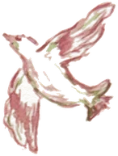
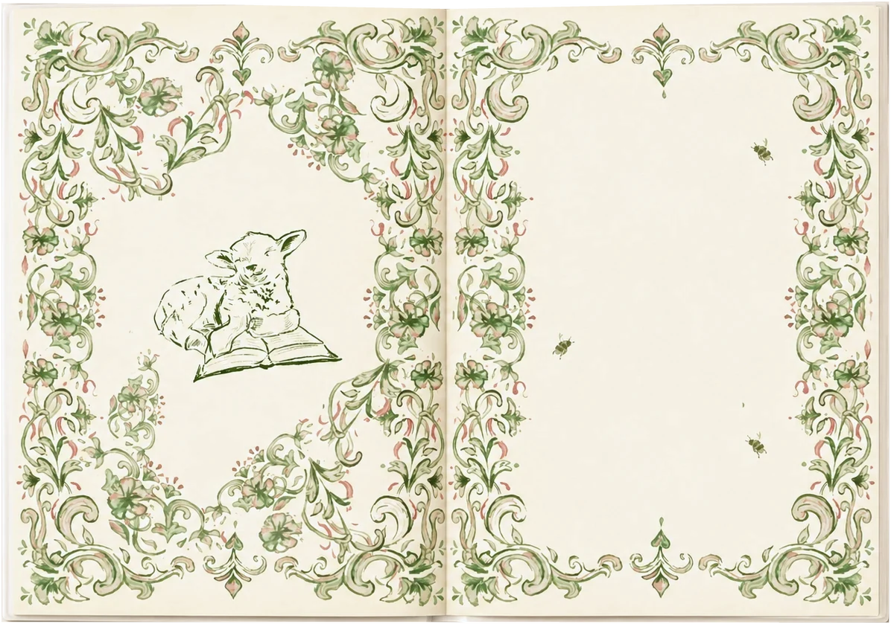

Nuestras Biblias



De generación en generación
Una página para tu dedicatoria
Cada Biblia guarda una página enmarcada en flores para que escribas, de tu puño y letra, unas palabras para quien la recibe. Una Biblia para pasar de padres a hijos, y de hijos a nietos.
encargar la mía
Recién pintadas
Cada Biblia lleva un versículo propio en la contraportada.